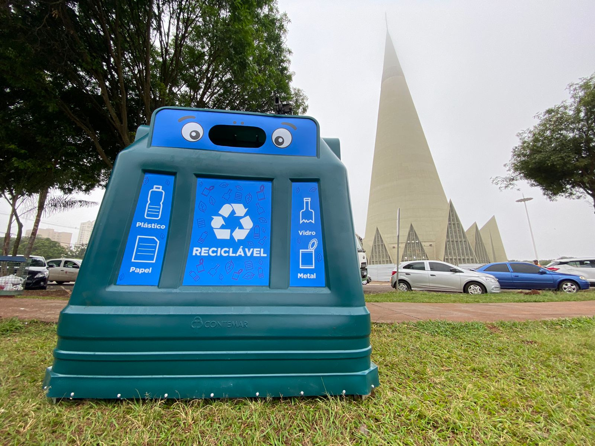
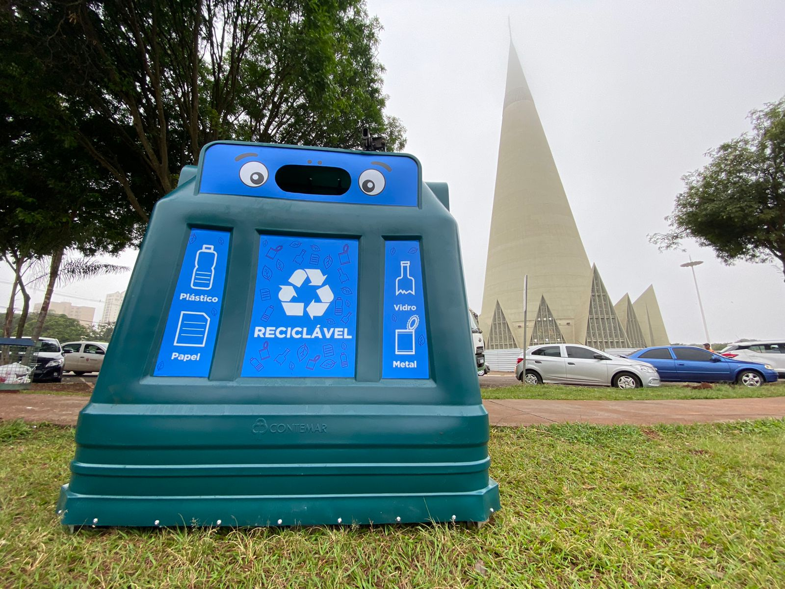

Quais os benefícios da reciclagem?
A reciclagem propicia muitos benefícios para o ser humano e para o meio ambiente. Alguns deles são:
Redução da emissão de gás carbônico: A reciclagem usa menos energia no processamento e no fornecimento de novas matérias-primas, o que significa menos emissões de gás carbônico. E também diminui os gases do efeito estufa, reduzindo os impactos negativos das mudanças climáticas.
Diminui custos: A reciclagem ajuda a diminuir gastos nas gestões pública e privada. Em que as prefeituras economizam com limpeza urbana, na construção de aterros sanitários e no tratamento de doenças, e as indústrias economizam a energia elétrica necessária para fazer novos produtos a partir de matéria-prima bruta.
Gera renda: Além de fazer bem ao meio ambiente e a população, a reciclagem também gera renda, em que as cooperativas de catadores conseguem, ao longo dos anos, um faturamento crescente com ganhos de produtividade.
A reciclagem propicia muitos benefícios para o ser humano e para o meio ambiente. Alguns deles são:
Redução da emissão de gás carbônico: A reciclagem usa menos energia no processamento e no fornecimento de novas matérias-primas, o que significa menos emissões de gás carbônico. E também diminui os gases do efeito estufa, reduzindo os impactos negativos das mudanças climáticas.
Diminui custos: A reciclagem ajuda a diminuir gastos nas gestões pública e privada. Em que as prefeituras economizam com limpeza urbana, na construção de aterros sanitários e no tratamento de doenças, e as indústrias economizam a energia elétrica necessária para fazer novos produtos a partir de matéria-prima bruta.
Gera renda: Além de fazer bem ao meio ambiente e a população, a reciclagem também gera renda, em que as cooperativas de catadores conseguem, ao longo dos anos, um faturamento crescente com ganhos de produtividade.
Quais as vantagens no ambiente escolar?
Como visto anteriormente, o processo de reciclagem gera uma série de benefícios para todos, sendo assim, traz também inúmeras vantagens para uma escola, em que podemos citar:
Como visto anteriormente, o processo de reciclagem gera uma série de benefícios para todos, sendo assim, traz também inúmeras vantagens para uma escola, em que podemos citar:
- Melhoramento no processo de limpeza do ambiente escolar;
- Cria no aluno o hábito de separar o lixo;
- Conscientiza o aluno em relação ao ato de jogar lixo em vias públicas;
- Diminui o desperdício;
- Auxilia no processo de limpeza da cidade;
- Combate a poluição.
Projetos
Existem também alguns projetos que promovem a reciclagem, alguns deles são:
Programa Câmbio verde - Curitiba: "Com este programa a prefeitura promove a troca de material reciclável por produtos hortifruti da época. A cada quatro quilos de lixo reciclável (papel, papelão, vidro, sucata ferrosa e não ferrosa) valem um quilo de frutas e verduras. Pode ser trocado também óleo vegetal e animal: a cada 4 litros de óleo vale 1kg de alimento."
Projeto Vale Luz (Distrito Federal): "O projeto da Neoenergia "Vale Luz" permite a troca de materiais recicláveis por descontos na conta de luz de consumidores do Distrito Federal. Os descartes são trocados por pontos para os usuários, que podem revertê-los em desconto na própria conta de luz ou em doações para entidades assistenciais. Por dez latas de alumínio ou 15 garrafas PET, o consumidor tem R$1 de desconto."
Existem também alguns projetos que promovem a reciclagem, alguns deles são:
Programa Câmbio verde - Curitiba: "Com este programa a prefeitura promove a troca de material reciclável por produtos hortifruti da época. A cada quatro quilos de lixo reciclável (papel, papelão, vidro, sucata ferrosa e não ferrosa) valem um quilo de frutas e verduras. Pode ser trocado também óleo vegetal e animal: a cada 4 litros de óleo vale 1kg de alimento."
Projeto Vale Luz (Distrito Federal): "O projeto da Neoenergia "Vale Luz" permite a troca de materiais recicláveis por descontos na conta de luz de consumidores do Distrito Federal. Os descartes são trocados por pontos para os usuários, que podem revertê-los em desconto na própria conta de luz ou em doações para entidades assistenciais. Por dez latas de alumínio ou 15 garrafas PET, o consumidor tem R$1 de desconto."
Em Maringá - Ecolix
"Uma das iniciativas do Programa Lixo Zero da Prefeitura de Maringá, o Ecolix, contêiner para recebimento de recicláveis, promove o reaproveitamento dos materiais."
"O secretário de Limpeza Urbana, Paulo Gustavo Ribas, afirma que além de uma solução sustentável e que facilita o descarte correto de resíduos, a iniciativa promove geração de renda para os empreendimentos de catadores de materiais recicláveis contratados pelo município. Os materiais recolhidos nos contêineres são destinados para as cooperativas." 
"Uma das iniciativas do Programa Lixo Zero da Prefeitura de Maringá, o Ecolix, contêiner para recebimento de recicláveis, promove o reaproveitamento dos materiais."
"O secretário de Limpeza Urbana, Paulo Gustavo Ribas, afirma que além de uma solução sustentável e que facilita o descarte correto de resíduos, a iniciativa promove geração de renda para os empreendimentos de catadores de materiais recicláveis contratados pelo município. Os materiais recolhidos nos contêineres são destinados para as cooperativas." 
Projetos que a escola pode realizar
Alguns projetos que a escola poderia realizar para ajudar a comunidade, parecidos com os projetos mostrados nas páginas anteriores, seria fazer projetos com o intuito de ajudar instituições sociais. Um exemplo:
Projeto: Tampinha Amiga: "A Associação de Pais e Amigos dos Excepcionais - APAE de Maringá, realiza o projeto Tampinha Amiga que consiste em unir esforços para a promoção da conscientização sócio ambiental e a geração de renda para a APAE de Maringá, por meio da reciclagem de tampas plásticas. O projeto se iniciará por meio do contato com o estabelecimento de escolas, igrejas, restaurantes e demais estabelecimentos comerciais e sociais. E na Instituição, algumas turmas de alunos utilizam até como material de apoio para trabalhar conteúdos do currículo escolar. Por meio desta iniciativa as pessoas ajudam a cuidar do meio ambiente, diminuindo o lixo que é acumulado, e ao mesmo tempo auxiliam uma Instituição que presta atendimento à comunidade Maringaense.
Alguns projetos que a escola poderia realizar para ajudar a comunidade, parecidos com os projetos mostrados nas páginas anteriores, seria fazer projetos com o intuito de ajudar instituições sociais. Um exemplo:
Projeto: Tampinha Amiga: "A Associação de Pais e Amigos dos Excepcionais - APAE de Maringá, realiza o projeto Tampinha Amiga que consiste em unir esforços para a promoção da conscientização sócio ambiental e a geração de renda para a APAE de Maringá, por meio da reciclagem de tampas plásticas. O projeto se iniciará por meio do contato com o estabelecimento de escolas, igrejas, restaurantes e demais estabelecimentos comerciais e sociais. E na Instituição, algumas turmas de alunos utilizam até como material de apoio para trabalhar conteúdos do currículo escolar. Por meio desta iniciativa as pessoas ajudam a cuidar do meio ambiente, diminuindo o lixo que é acumulado, e ao mesmo tempo auxiliam uma Instituição que presta atendimento à comunidade Maringaense.